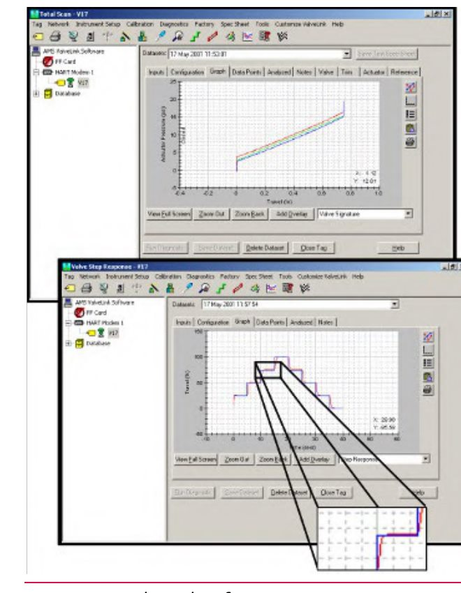

Meet ValveLink’s Diagnostic Screens

- 1Total Scan — shows the recorded signature graph (actuator pressure vs. travel) directly
- 2Valve Step Response — runs a step test and displays the resulting travel-vs-time response
After Control Valve Handbook, 6th ed., Fig. 2.10 — used directly. Component Index: cvh-cmp-valvelink-software-screens.